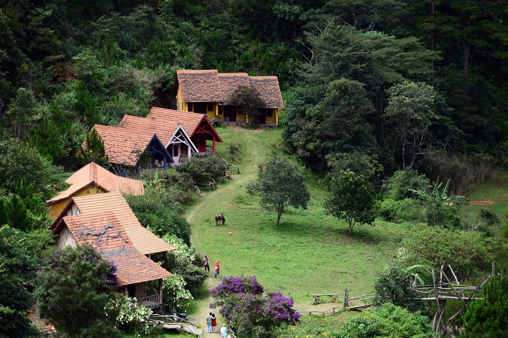
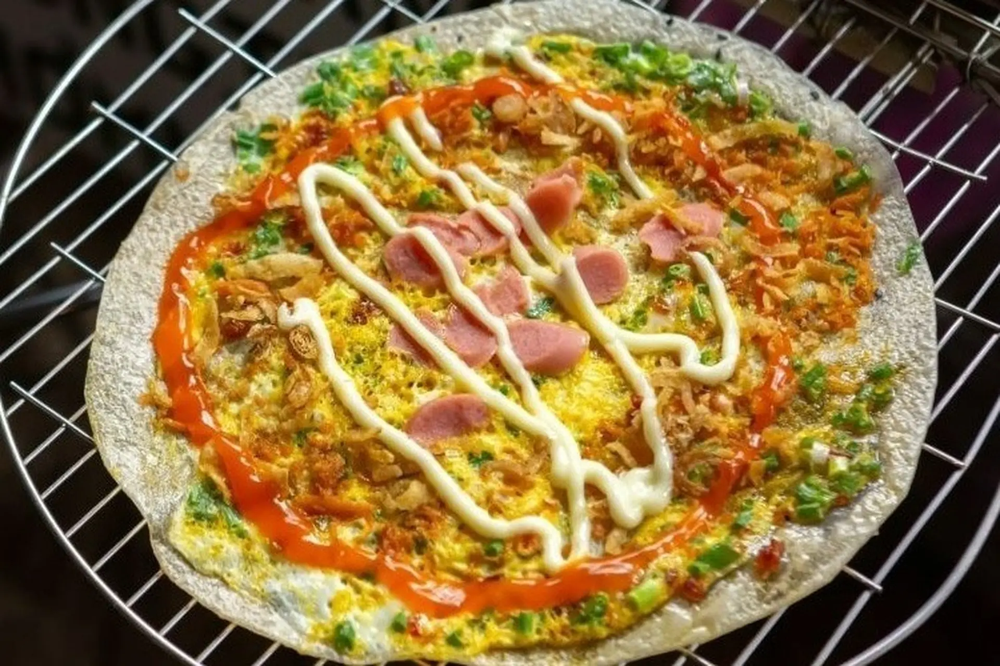
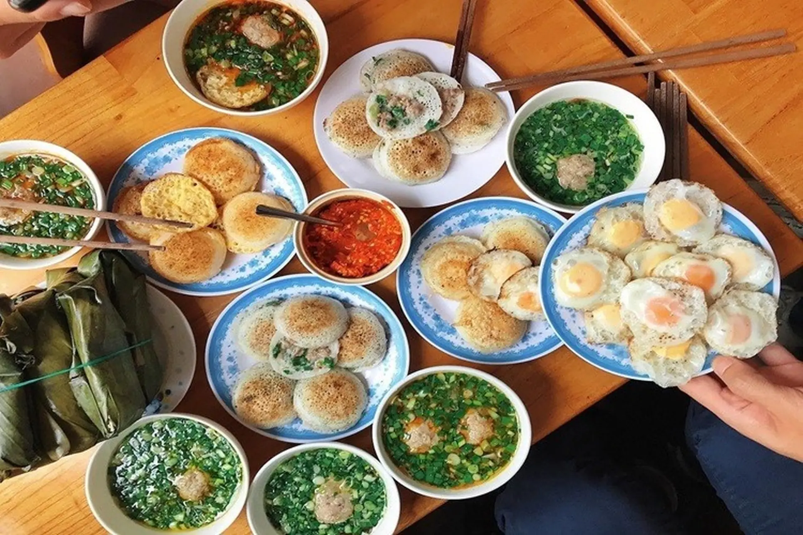
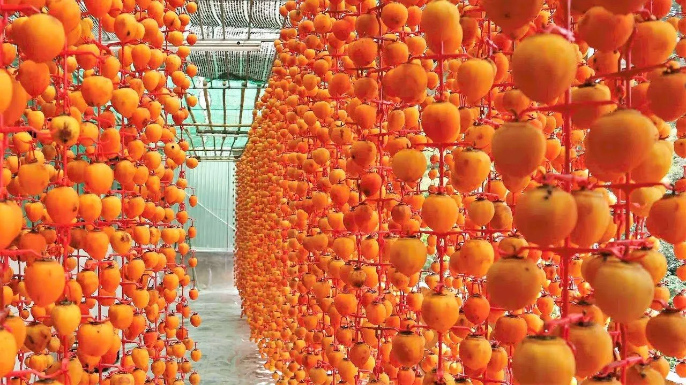
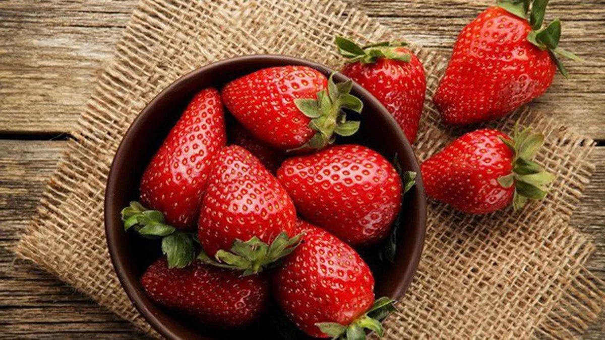
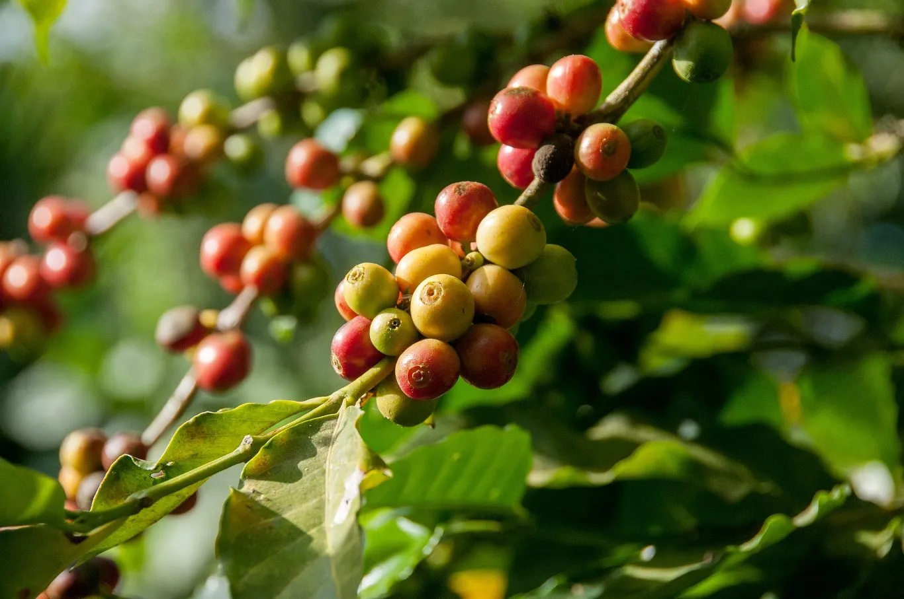
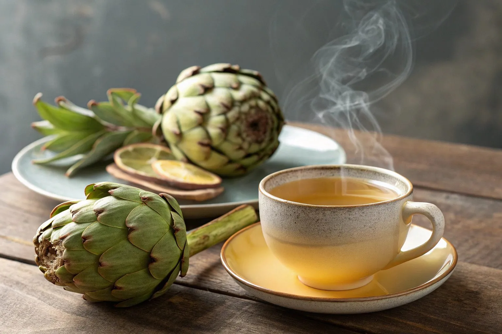
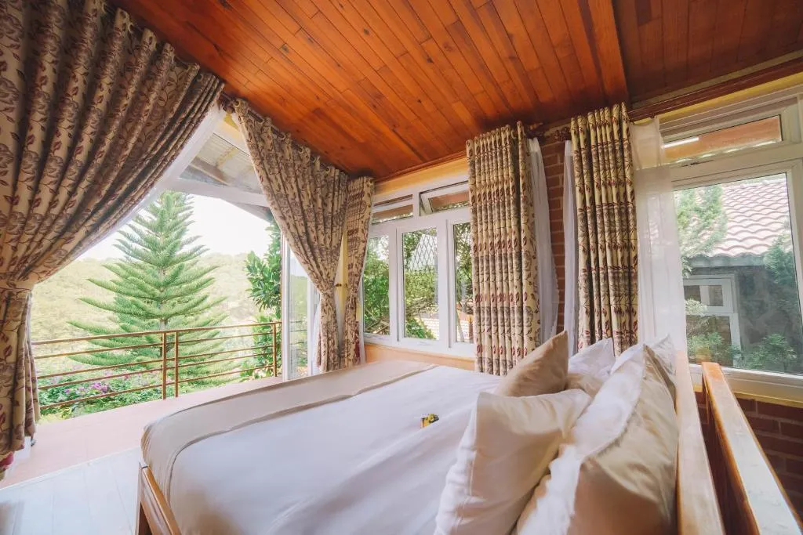
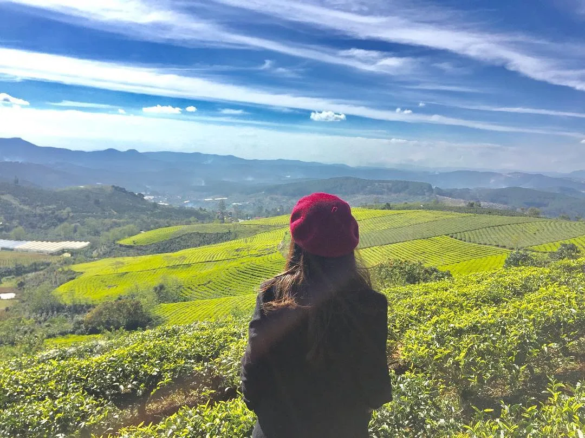

Dalat travel guide 2025 None Explore the Foggy City

Mục lục bài viết
- 1. Which season is best to travel to Da Lat?
-
2. Instructions on how to get to Da Lat in the fastest and most convenient way
- 2.1. Going to Da Lat by bus None a popular and economical choice for a trip to Da Lat
- 2.2. Take a plane to Da Lat None a quick, timeNonesaving choice for your trip to Da Lat
- 2.3. Take the train combined with a bus None explore Da Lat tourism with an interesting and convenient journey
- 2.4. Drive yourself to Da Lat None experience proactive and flexible Dalat travel on every road
-
3. Means of transportation within the city when traveling to Da Lat
- 3.1. Rent a motorbike None the perfect choice to freely travel and explore all the roads when traveling to Da Lat
- 3.2. Taxis and car rental None convenient transportation solutions for groups and families when traveling to Da Lat
- 3.3. Famous places to visit in Da Lat None discover the beauty and experience the best Da Lat travel
- 4. Famous places to visit in Da Lat None discover the beauty and experience the best Da Lat travel
-
5. Super hot checkNonein and fun places in Da Lat
- 5.1. Datanla waterfall tourist area None an ideal stop for Da Lat tourism
- 5.2. Zoodoo Dalat Zoo None an interesting destination in the Dalat travel itinerary
- 5.3. Puppy Farm None a unique fun experience when traveling to Da Lat
- 5.4. Langbiang tourist area None an experience viewing Da Lat from above that cannot be missed
- 5.5. Beautiful cafes in Da Lat None an experience not to be missed when traveling to Da Lat
- 5.6. Cu Lan Village None a tourist destination in Da Lat with a cultural space in the middle of the jungle
- 5.7. Fresh Garden None flower paradise in the heart of the city in the Da Lat travel itinerary
- 5.8. Chợ đêm Da Lat – điểm đến không thể bỏ lỡ cho du lịch Da Lat
- 6. What and where to eat when traveling to Da Lat?
- 7. Suggested Dalat travel itinerary 3 days 2 nights
-
8. Top 5 Da Lat specialties you should buy as gifts when traveling to Da Lat
- 8.1. WindNonehanging roses None A flavorful gift for your trip to Da Lat
- 8.2. Fruit jam None Sweet and rich in flavor when traveling to Da Lat
- 8.3. Fresh strawberries None Famous fruit specialty that is indispensable when traveling to Da Lat
- 8.4. Cau Dat Coffee None A gift for coffee lovers when traveling to Da Lat
- 8.5. Artichoke tea None A healthy gift, easy to preserve when traveling to Da Lat
- 9. Da Lat travel experience helps you have a complete journey
Du lịch Da Lat là hành trình lý tưởng dành cho những ai yêu thích không gian trong lành, mát mẻ cùng cảnh sắc thiên nhiên thơ mộng. Tại thành phố ngàn hoa, du khách không chỉ được hít thở bầu không khí dễ chịu, chiêm ngưỡng rừng thông bạt ngàn, hồ nước trong xanh, mà còn có cơ hội khám phá nền ẩm thực Da Lat đặc sắc với vô vàn món ngon hấp dẫn.

Từ lâu, thành phố Da Lat đã trở thành điểm đến được yêu thích bởi những tâm hồn lãng mạn, thích sự tĩnh lặng và cái lạnh dễ chịu đặc trưng của vùng cao nguyên. Để chuyến đi thêm trọn vẹn, bạn đừng bỏ qua cẩm nang du lịch Da Lat từ ANoneZ dưới đây – nơi tổng hợp đầy đủ những kinh nghiệm cần thiết giúp bạn khám phá nơi này một cách trọn vẹn và thú vị nhất.
1. Which season is best to travel to Da Lat?
Located at an altitude of 1,500m, Da Lat has a cool climate all year round, each season has its own beauty, suitable for each type of tourism. Let's explore the most ideal times to visit the city of flowers:
1.1. January None April: Brilliant spring in the mountain town
Da Lat is chilly at the beginning of the year, the air is fresh, cherry blossoms, white banyan trees, and purple poinciana bloom all over the street. This is the ideal season to checkNonein, take wedding photos, or travel with relatives and friends.
📌 Lưu ý: Mang theo áo ấm và theo dõi lịch hoa nở nếu muốn săn mai anh đào.

1.2. May None September: Cool summer in the city of thousands of pine trees None travel to Da Lat
While many places are hot and sunny, Da Lat is still pleasant, with light rain, ideal for relaxing or exploring cafes with beautiful views. This time also has sunflowers blooming and romantic fog scenes.
☂️ Lưu ý: Nên chuẩn bị áo mưa nhẹ hoặc ô vì mưa thường đến bất ngờ.
 Photo: Cool summer in the city of thousands of pine trees None Da Lat travel
Photo: Cool summer in the city of thousands of pine trees None Da Lat travel
1.3. October None December: Dry season None the most beautiful time of the year
At the end of the year, Da Lat is colder, with lots of morning dew, poetic scenery with wild sunflowers, white cabbage and pink grass hills. This is also the "cloud hunting" season that many tourists love at Thien Phuc Duc hill, Da Phu, Langbiang.
🎒 Lưu ý: Đặt vé và phòng sớm vì mùa này đông khách.
 Photo: The charming season of wildflowers and pink grass None Da Lat travel
Photo: The charming season of wildflowers and pink grass None Da Lat travel
2. Instructions on how to get to Da Lat in the fastest and most convenient way
Da Lat is about 300km from Ho Chi Minh City and nearly 1,500km from Hanoi, so depending on the starting point, you can choose many suitable means of transport:
2.1. Going to Da Lat by bus None a popular and economical choice for a trip to Da Lat
From Ho Chi Minh City and the Southern provinces, passenger cars are a popular means of transport thanks to their reasonable cost and convenience. There are many companies operating continuous routes, with seats, beds or double rooms, ticket prices range from 150,000 None 380,000 VND.
💡 Mẹo du lịch Da Lat: Nếu muốn thoải mái hơn, bạn nên chọn xe phòng nằm đôi để có không gian riêng tư và dễ nghỉ ngơi hơn.

2.2. Take a plane to Da Lat None a quick, timeNonesaving choice for your trip to Da Lat
Flying to Lien Khuong airport from Hanoi, Da Nang, Can Tho... is the optimal choice. Domestic airlines such as Vietnam Airlines, Vietjet, Bamboo Airways operate many flights with ticket prices of 400,000 None 2,000,000 VND/way. From the airport to Da Lat center takes about 45 minutes by taxi or bus.

2.3. Take the train combined with a bus None explore Da Lat tourism with an interesting and convenient journey
Da Lat does not have a train station, but you can take the train to Nha Trang and then catch a bus to Da Lat (130km). This is an interesting choice if you want to combine exploring Nha Trang beach and Da Lat mountains and forests, with a cost of about 100,000 None 150,000 VND/person.

2.4. Drive yourself to Da Lat None experience proactive and flexible Dalat travel on every road
If you like to experience winding mountain passes, you can drive a motorbike or personal car. However, you need a steady steering wheel and a safe vehicle, especially on Highway 20 from Ho Chi Minh City to Da Lat.

3. Means of transportation within the city when traveling to Da Lat
Da Lat has many diverse means of transportation, helping you easily explore famous attractions in the city:
3.1. Rent a motorbike None the perfect choice to freely travel and explore all the roads when traveling to Da Lat
Renting a motorbike is a popular choice, especially for young people, thanks to its flexibility and reasonable cost (80,000 None 150,000 VND/day). You can rent a car at hotels or reputable rental locations on central roads such as Bui Thi Xuan and Nam Ky Khoi Nghia.
✅ Mẹo: Chọn xe tay ga cho di chuyển nội thành, xe số nếu đi đèo Tà Nung hoặc Prenn.

3.2. Taxis and car rental None convenient transportation solutions for groups and families when traveling to Da Lat
Renting a selfNonedriving car or taxi is suitable for large groups or families. Car rental price is about 700,000 None 1,000,000 VND/day, taxi from 10,000 None 18,000 VND/km. You can also rent a car with a driver for about 1,200,000 None 1,500,000 VND/day for a 7Noneseat car.
🚗 Gợi ý: Thuê xe có tài xế giúp bạn thoải mái khám phá, nhất là lần đầu đến Da Lat hoặc đi các điểm xa.

3.3. Famous places to visit in Da Lat None discover the beauty and experience the best Da Lat travel
Bicycles are suitable for those who want to relax and explore the fresh air around Xuan Huong Lake, Hoa Binh area or small central roads. Bicycle rental price is only about 20,000 None 30,000 VND/hour.

4. Famous places to visit in Da Lat None discover the beauty and experience the best Da Lat travel
When exploring Da Lat, you will have the opportunity to visit many outstanding destinations from poetic nature to unique architectural works. Each Dalat tourist destination has its own beauty, promising to bring memorable experiences to visitors. Here are ideal suggestions that you should not miss:
4.1. Lam Vien Square None a prominent tourist destination in Da Lat, a brilliant symbol of the foggy city
As the most popular checkNonein place in Da Lat, Lam Vien Square stands out with two works shaped like wild sunflowers and giant artichoke buds made of stained glass, overlooking the romantic Xuan Huong Lake. Not only symbolic, this place is also a place to have fun, stroll, enjoy street specialties and save vivid photos.
-
Địa chỉ: Trần Quốc Toản, P.1, TP. Da Lat
-
Giá vé: Miễn phí

4.2. Xuan Huong Lake None a prominent Da Lat tourist destination, the green heart of the city of flowers
Located right in the center, Xuan Huong Lake is one of the famous places in Da Lat with calm water surface, surrounded by pine trees and lush green lawns. Visitors can walk, duck, ride a tandem bike around the lake or capture beautiful moments at the YNoneshaped bridge.
-
Địa chỉ: Giao giữa đường Trần Quốc Toản & Nguyễn Thái Học, P.1, TP. Da Lat
-
Giá vé: Miễn phí

4.3. Dinh Bảo Đại – điểm du lịch Da Lat với dấu ấn kiến trúc hoàng gia độc đáo và lịch sử phong phú
The Bao Dai palace system is a testament to the royal period with a design imbued with ancient French architecture combined with Hue royal style. This was once the residence and working place of the last king of the Nguyen Dynasty None King Bao Dai.
-
Địa chỉ:
-
Palace 1: 01 Tran Quang Dieu, Ward 10
-
Palace 2: 12 Tran Hung Dao, Ward 10
-
Palace 3: 01 Trieu Viet Vuong, Ward 4
-
-
Giá vé:
-
Palace 1: 50,000 VND/adult, 25,000 VND/child
-
Dinh 2 & 3: 30.000 VNĐ/vé
-

4.4. Hồ Tuyền Lâm – điểm du lịch Da Lat với không gian thiên nhiên thơ mộng và yên bình
As the largest lake in Da Lat, Tuyen Lam Lake is surrounded by lush green pine forests, creating a peaceful natural picture. This is a suitable Da Lat tourist destination for those who want to experience boating, duck riding, camping or enjoying coffee by the lake.
-
Địa chỉ: P.4, TP. Da Lat, cách trung tâm khoảng 6km
-
Giá vé: Miễn phí

4.5. Thung Lũng Tình Yêu – điểm du lịch Da Lat lãng mạn, thu hút nhiều cặp đôi và du khách khám phá
Located between pine hills and lakes, Love Valley possesses a dreamy beauty, suitable for couples and tourists who love romance. This place has fun activities such as trams, jeeps, duck rides, and many miniatures for taking pictures.
-
Địa chỉ: 3None5None7 Mai Anh Đào, P.8, cách trung tâm 5km
-
Giá vé: 125.000 VNĐ/trẻ em, 250.000 VNĐ/người lớn

4.6. Thiền viện Trúc Lâm – điểm du lịch Da Lat nổi tiếng dành cho hành trình tâm linh và thư giãn
Located on Phung Hoang Mountain, Truc Lam Zen Monastery is a prominent pilgrimage site of the Truc Lam Yen Tu Zen sect. The space here is quiet and peaceful, with views overlooking the romantic Tuyen Lam Lake and the surrounding vast pine forest.
-
Địa chỉ: Trúc Lâm Yên Tử, P.3, TP. Da Lat
-
Giá vé: Miễn phí

4.7. Cau Dat tea hill None an ideal Da Lat tourist destination to hunt clouds and watch the sunrise
As one of the prominent checkNonein spots in Da Lat, Cau Dat tea hill fascinates visitors with its fresh air, immense green color and poetic scenery at dawn. This is also an ideal rattan hunting spot and has a unique tea museum.
-
Địa chỉ: Trường Thọ, X. Xuân Trường, cách trung tâm 25km
-
Giá vé: Miễn phí

4.8. Domaine de Marie Church None Dalat tourist destination with unique European architecture in the middle of a mountain town
Domaine de Marie Church impresses with its striking redNonebrown color and design inspired by Central Highlands communal houses. Surrounded by a campus filled with cherry blossoms and narcissus flowers, ideal for taking photos and strolling.
-
Địa chỉ: 1 Ngô Quyền, P.6, TP. Da Lat
-
Giá vé: Miễn phí

4.9. Dalat City Flower Garden None A paradise of vibrant flowers for Dalat tourism
As an indispensable tourist destination in Da Lat on the journey of discovery, the city's flower garden gathers hundreds of precious flower species from all over. The campus is elaborately designed with many miniature landscapes, orchid gardens, and rose houses, very suitable for enjoying and taking photos.
-
Địa chỉ: 02 Trần Nhân Tông, P.8, TP. Da Lat
-
Giá vé: 50.000 VNĐ/trẻ em, 100.000 VNĐ/người lớn

4.10. Chùa Linh Phước – Điểm du lịch Da Lat với kiến trúc độc đáo và ấn tượng
Also known as Ve Chai Pagoda, Linh Phuoc Pagoda stands out with its sophisticated ceramic mosaic art, along with many impressive records such as the tallest bell tower, heaviest bronze bell in Vietnam and the statue of Bodhisattva Avalokiteshvara made from 700,000 immortal flowers.
-
Địa chỉ: 120 Tự Phước, Trại Mát, P.11, cách trung tâm Da Lat khoảng 8km
-
Giá vé: Miễn phí

5. Super hot checkNonein and fun places in Da Lat
Not only famous for its cool climate all year round and charming nature, Da Lat also fascinates tourists with a series of fun and photoNonetaking spots. Whether you love peace or are looking for an exciting experience, the foggy city always has suitable activities to explore. Below are extremely hot tourist destinations in Da Lat, ideal to checkNonein and enjoy a memorable vacation:
5.1. Datanla waterfall tourist area None an ideal stop for Da Lat tourism
Located close to Prenn Pass, Datanla waterfall attracts tourists with its poetic and majestic beauty. The waterfall flows all year round, weaving through the green forest canopy, creating a relaxing and ideal space for outdoor activities. Here, you can experience walking through the forest, admire the waterfall from above or participate in adventure games such as waterfall skiing, zipline, rope swing over waterfalls...
-
Địa chỉ: Đèo Prenn, Quốc lộ 20, Phường 3, TP. Da Lat
-
Giá vé tham khảo: 80.000 VNĐ/người lớn – 50.000 VNĐ/trẻ em

5.2. Zoodoo Dalat Zoo None an interesting destination in the Dalat travel itinerary
Zoodoo is a friendly AustralianNonestyle zoo model, suitable for those who love animals and ecoNonetourism. You will have the opportunity to interact and take photos with species such as kangaroos, sheep, ponies or alpacas in open space and close to nature.
-
Địa chỉ: Quốc lộ 27C, xã Đạ Nhim, huyện Lạc Dương (cách Da Lat ~30km)
-
Giá vé tham khảo: 150.000 VNĐ/người lớn – 75.000 VNĐ/trẻ em (cao từ 0.9m đến 1.2m)

5.3. Puppy Farm None a unique fun experience when traveling to Da Lat
Puppy Farm is one of the prominent farms in Da Lat, where many highNonetech crops and friendly animals converge. Here, you can walk through flower fields, pick strawberries at the garden, visit tomato and cactus gardens or play with adorable dogs and alpacas.
-
Địa chỉ: Khu vực Cam Ly, Phường 7, TP. Da Lat
-
Giá vé tham khảo: 100.000 VNĐ/người lớn – 50.000 VNĐ/trẻ em (từ 1m2 đến 1m4) – Miễn phí cho trẻ dưới 1m2

5.4. Langbiang tourist area None an experience viewing Da Lat from above that cannot be missed
Langbiang không chỉ là biểu tượng của cao nguyên Lâm Viên mà còn là nơi tuyệt vời để ngắm toàn cảnh thành phố Da Lat từ độ cao gần 2.200m. Bạn có thể lựa chọn đi xe jeep lên đỉnh, tham gia leo núi hoặc cắm trại qua đêm để cảm nhận trọn vẹn vẻ đẹp hùng vĩ nơi đây.
-
Địa chỉ: Thị trấn Lạc Dương, huyện Lạc Dương, tỉnh Lâm Đồng
-
Giá vé tham khảo: 50.000 VNĐ/người lớn – 25.000 VNĐ/trẻ em

5.5. Beautiful cafes in Da Lat None an experience not to be missed when traveling to Da Lat
The poetic space of cafes is an indispensable part of the Da Lat travel itinerary. With architecture that blends with nature and a view of the pine hills, cafes like Cheo Veo, Chenh Cafe, Nha Ben Suoi or Xom Leo... all bring a relaxing, quiet experience and a cool virtual living corner.
-
Gợi ý một số quán nổi bật:
-
Cheo Veo: 116 Hùng Vương, hẻm Dã Chiến, P. 11
-
Lưng Chừng: hẻm 31/8, đường 3/4, P. 3
-
Mê Linh Coffee: Thôn 4, xã Tà Nung
-

5.6. Cu Lan Village None a tourist destination in Da Lat with a cultural space in the middle of the jungle
Nestled at the foot of Langbiang Mountain, Cu Lan Village is a unique destination that helps visitors discover the traditional cultural beauty of the K'ho people. The peaceful space, vast pine forests and lovely wooden houses will take you away from modern life to wild nature.
-
Địa chỉ: Thôn Suối Cạn, xã Lát, huyện Lạc Dương
-
Giá vé tham khảo: 100.000 VNĐ/người lớn

5.7. Fresh Garden None flower paradise in the heart of the city in the Da Lat travel itinerary
Fresh Garden is a flower garden located right in the center of Da Lat, gathering thousands of flowers blooming brilliantly all year round. Besides the colorful space, this place also has a lake with forest view and many eyeNonecatching decorative miniatures, very suitable for taking souvenir photos.
-
Địa chỉ: 90B Vạn Thành, Phường 5, TP. Da Lat
-
Giá vé tham khảo: 120.000 VNĐ/người lớn – 80.000 VNĐ/trẻ em

5.8. Chợ đêm Da Lat – điểm đến không thể bỏ lỡ cho du lịch Da Lat
Nhắc đến các địa điểm du lịch Da Lat về đêm thì không thể không kể đến chợ đêm Da Lat – nơi hội tụ của những món đặc sản nóng hổi và hàng loạt sản phẩm thủ công địa phương. Bạn có thể thưởng thức bánh tráng nướng, sữa đậu nành, khoai nướng… và mua quà lưu niệm như khăn len, hoa quả sấy khô về làm quà.
-
Địa chỉ: Khu Hòa Bình, Phường 1, TP. Da Lat
-
Giá vé tham quan: Miễn phí

💡 Lưu ý: Giá vé tham khảo có thể thay đổi tùy theo thời điểm và chương trình khuyến mãi của từng địa điểm du lịch.
6. What and where to eat when traveling to Da Lat?
Dalat cuisine is an indispensable part of the travel experience with many typical delicious dishes, suitable for the cold atmosphere of the mountain town. Here are 5 mustNonetry dishes:
6.1. Shumai bread None A typical breakfast dish not to be missed when traveling to Da Lat
A familiar breakfast dish with crispy bread dipped in hot, spicy satay sauce.
Delicious restaurant suggestions:
-
26 Hoang Dieu, Ward 5
-
4 Tran Nhat Duat
-
16A Nguyen Chi Thanh, Ward 1

6.2. Chicken intestine wet cake None Attractive specialty for culinary experience when traveling to Da Lat
Fragrant wet cake served with chicken intestines, chicken meat and rich sweet and sour fish sauce.
Delicious restaurant suggestions:
-
Long: Alley 202 Phan Dinh Phung
-
Page: 15F Tang Bat Ho
-
Hang 68: 68 Phan Dinh Phung

6.3. Da Lat grilled rice paper None Attractive snack not to be missed when traveling to Da Lat
“Da Lat Pizza” with rich toppings such as eggs, pate, cheese, dried beef... grilled crispy over charcoal.
Delicious restaurant suggestions:
-
Aunt Dinh: 26 Hoang Dieu
-
61 Nguyen Van Troi
-
180 Bui Thi Xuan

6.4. Banh can shumai None A breakfast dish not to be missed when traveling to Da Lat
Made from rice flour, filled with a variety of fillings such as eggs, beef, squid... served with shumai fish sauce.
Delicious restaurant suggestions:
-
Common House: 1 Common House
-
15A Nguyen Bieu
-
Thuy: 20 Anh Sang hamlets

7. Suggested Dalat travel itinerary 3 days 2 nights
The 3 days 2 nights Dalat itinerary is the ideal choice for you to explore nature, cuisine and enjoy fresh air. Below are detailed suggestions:
Day 1:
-
Sáng: Thưởng thức bánh mì xíu mại – CheckNonein hồ Tuyền Lâm – Trải nghiệm máng trượt tại thác Datanla – Ghé Thiền viện Trúc Lâm yên bình bên rừng thông.
-
Trưa: Về trung tâm nghỉ ngơi tại khách sạn, nạp lại năng lượng.
-
Chiều: Chill cùng cà phê hoàng hôn tại Horizon Coffee, view đồi thông rộng mở, lý tưởng để ngắm hoàng hôn buông.
-
Tối: Dạo chợ đêm Da Lat, khám phá các món ngon đường phố: bánh tráng nướng, xiên nướng, sữa đậu nành nóng…

Day 2:
-
Sáng: Thưởng thức bánh ướt lòng gà – Lên núi Langbiang hùng vĩ, ngắm toàn cảnh thành phố từ trên cao.
-
Trưa: Ghé làng Cù Lần, hòa mình vào thiên nhiên – Ăn trưa tại khu du lịch – Trở về khách sạn nghỉ ngơi.
-
Chiều: Tham quan vườn hoa thành phố rực rỡ sắc màu – Đạp vịt thư giãn tại hồ Xuân Hương.
-
Tối: Dùng bữa tại Tiệm Nướng & Chill Xóm Lèo – Không gian chill giữa rừng, món nướng đậm đà, ngắm Da Lat lung linh về đêm.
📍 Địa chỉ: 113 Huỳnh Tấn Phát, Phường 11, Da Lat
🔥 Cozy chill grill space, full of mountain town style, with a rich menu, authentic Da Lat flavors.
👉 Đặt bàn: Fanpage | ☎️ Hotline: 076.45.27.336 – 08.99.42.84.34 – 0902.91.22.40
📍 Chỉ đường: Xem bản đồ Google Maps
Day 3:
-
Sáng: Cà phê sáng ở khu Hòa Bình – Thưởng thức bánh căn, bánh tiêu kẹp xôi – Tham quan đồi chè Cầu Đất với khung cảnh xanh ngát.
-
Trưa: Ghé thăm chùa Linh Phước (chùa Ve Chai) – Trở về khách sạn trả phòng – Dùng bữa trưa nhẹ – Kết thúc hành trình, chuẩn bị rời Da Lat.

Mẹo: Nếu muốn du lịch nghỉ dưỡng, bạn có thể lược bớt điểm đến, ưu tiên dạo phố, ngắm cảnh và cà phê chill để cảm nhận rõ hơn nhịp sống Da Lat.
8. Top 5 Da Lat specialties you should buy as gifts when traveling to Da Lat
Da Lat not only attracts tourists with its charming scenery and cool climate but is also famous for its countless delicious specialties that are easy to bring home as gifts. Below are Da Lat specialties worth choosing after your trip:
8.1. WindNonehanging roses None A flavorful gift for your trip to Da Lat
WindNonehanging persimmon is one of the most outstanding specialties of the highland region. The persimmons are carefully selected, then processed and hung in the typical natural climatic conditions of Da Lat, helping to retain their sweetness, flexibility and characteristic aroma.
Reputable place to buy:
-
Da Lat Market
-
Famous gardeners such as Moc Tra Farm, La Fresh Da Lat

8.2. Fruit jam None Sweet and rich in flavor when traveling to Da Lat
Da Lat is also known as the "land of jam" with countless types of attractive jams such as strawberry jam, artichoke jam, rose jam, tomato jam... Each type has its own unique flavor, delicious, attractive and suitable for all ages.
Suggested place to buy:
-
Dalat market area
-
Traditional jam factories, specialty shops

8.3. Fresh strawberries None Famous fruit specialty that is indispensable when traveling to Da Lat
Strawberries are a "national specialty" fruit when mentioning Da Lat. Strawberries here have a mild sweet taste, are succulent, have shiny skin and are often grown organically in greenhouses.
Recommended address:
-
Tourist strawberry garden (can be picked on site)
-
Fruit stalls at Da Lat market

8.4. Cau Dat Coffee None A gift for coffee lovers when traveling to Da Lat
If you are a coffee lover or are looking for a unique gift, Cau Dat coffee is an option not to be missed. The coffee here has a charming aroma and rich taste, especially with the rare moka and weasel coffee varieties.
Place of sale:
-
Cau Dat Farm
-
L'angfarm, Berryland or shops specializing in selling specialty coffee

8.5. Artichoke tea None A healthy gift, easy to preserve when traveling to Da Lat
Artichoke is a plant widely grown in Da Lat, often processed into tea or dried. Artichoke tea is not only delicious but also helps cool the liver, purify the body and is easy to bring home as a gift.
Address you should visit:
-
Reputable stores such as L'angfarm, DaLaVi, Cau Dat Farm
-
Dalat central market area

9. Da Lat travel experience helps you have a complete journey
To have a smooth and memorable trip to Da Lat, careful preparation is always necessary. Below are some useful tips you should not ignore.
9.1. Choose the right place to stay when traveling to Da Lat
Depending on your preferences and budget, you can choose to stay in a lovely homestay, a comfortable hotel or a luxury resort. If you want to conveniently travel and explore famous places, you should choose a room near Xuan Huong Lake or the city center. If you love tranquility and closeness to nature, suburban homestays or glamping in the middle of pine forests are ideal choices.

9.2. Necessary clothing when traveling to Da Lat
Da Lat has a cool climate all year round and is chilly in the early mornings and late evenings, especially from October to January. You should prepare warm coats, scarves, and sneakers to keep warm and conveniently move around. In addition, don't forget to bring some nice clothes to checkNonein virtually at famous destinations.

9.3. Some important notes when traveling to Da Lat
-
Chuẩn bị áo mưa hoặc ô nhỏ: Thời tiết Da Lat khá thất thường, dễ có mưa vào buổi chiều từ tháng 5 đến tháng 12.
-
Chọn giày phù hợp: Với địa hình đồi dốc đặc trưng, bạn nên mang giày mềm, dễ di chuyển.
-
Chống nắng: Tuy trời mát nhưng tia UV vẫn cao, nên thoa kem chống nắng và mang theo kính râm, khẩu trang.
-
Cẩn thận khi lái xe: Nếu tự thuê xe máy, bạn cần chú ý vì đường đèo khá nhiều, dễ trơn trượt.
-
Hỏi giá trước khi mua: Tại các khu du lịch hoặc chợ đêm, bạn nên hỏi giá kỹ và mặc cả hợp lý để tránh bị “hét giá”.